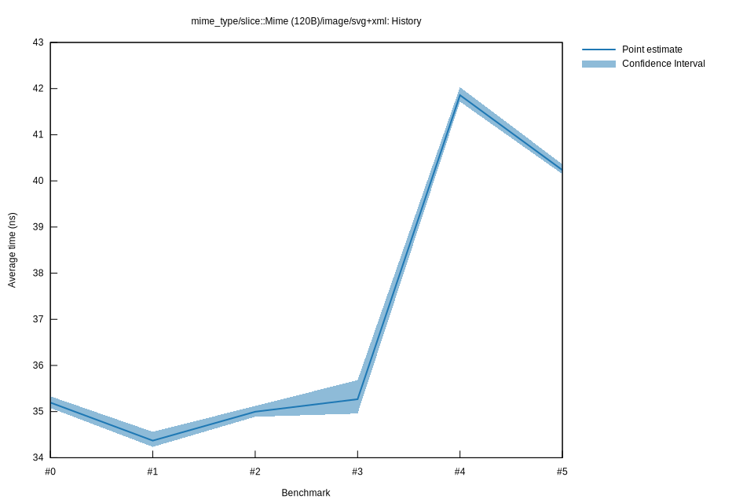

# 52025-11-08T07:00:17-08:00
|
Lower Bound |
Estimate |
Upper Bound |
| Value: |
40.15ns |
40.23ns |
40.36ns |
| Throughput: |
308.81MiB/s |
308.15MiB/s |
307.18MiB/s |
| Change in Value: |
-4.8800% |
-3.9889% |
-3.1456% |
| Change in Throughput: |
+5.1303% |
+4.1547% |
+3.2478% |
No change in performance detected.
# 42025-11-08T06:56:10-08:00
|
Lower Bound |
Estimate |
Upper Bound |
| Value: |
41.72ns |
41.86ns |
42.03ns |
| Throughput: |
297.19MiB/s |
296.19MiB/s |
294.97MiB/s |
| Change in Value: |
+17.889% |
+19.371% |
+20.893% |
| Change in Throughput: |
-15.174% |
-16.228% |
-17.282% |
No change in performance detected.
# 32025-10-14T15:36:21-07:00
|
Lower Bound |
Estimate |
Upper Bound |
| Value: |
34.96ns |
35.27ns |
35.68ns |
| Throughput: |
354.65MiB/s |
351.53MiB/s |
347.46MiB/s |
| Change in Value: |
-0.4539% |
+0.6937% |
+1.8138% |
| Change in Throughput: |
+0.4560% |
-0.6889% |
-1.7815% |
Change within noise threshold.
# 22025-10-05T14:43:57-07:00
|
Lower Bound |
Estimate |
Upper Bound |
| Value: |
34.89ns |
35.00ns |
35.12ns |
| Throughput: |
355.36MiB/s |
354.25MiB/s |
352.99MiB/s |
| Change in Value: |
+0.2213% |
+0.9069% |
+1.7453% |
| Change in Throughput: |
-0.2208% |
-0.8988% |
-1.7154% |
No change in performance detected.
# 12025-10-05T13:02:35-07:00
|
Lower Bound |
Estimate |
Upper Bound |
| Value: |
34.24ns |
34.37ns |
34.56ns |
| Throughput: |
362.14MiB/s |
360.71MiB/s |
358.72MiB/s |
| Change in Value: |
-5.1973% |
-3.2041% |
-1.6587% |
| Change in Throughput: |
+5.4822% |
+3.3101% |
+1.6867% |
No change in performance detected.
# 02025-10-05T13:00:38-07:00
|
Lower Bound |
Estimate |
Upper Bound |
| Value: |
35.08ns |
35.20ns |
35.33ns |
| Throughput: |
353.43MiB/s |
352.26MiB/s |
350.90MiB/s |